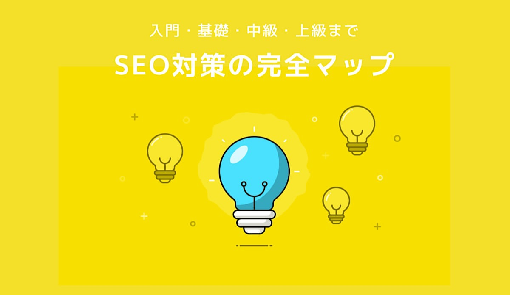

SEO対策の完全マップ【入門・基礎・中級・上級：16記事で解説】

SEO対策の基本から応用まで学習したい方向け。
当記事では、変化の激しいSEO 情報を基礎から応用までまとめました。限りなく網羅的にまとめましたので、これからSEOを学びたい人や現在学習中の人は是非ご覧ください。
本記事の信憑性
当サイトではSEO集客のアフィリエイトで、月100万円以上の収益が上がっています。
実際に売上に繋がるSEO施策ですので、じっくりご覧いただけますと幸いですm(_ _)m
SEO対策の入門編：完全な初心者向けの記事３本
SEO対策において検索エンジンの理解は必須です。検索エンジンを理解したあとに、SEOの概要を学んでいきましょう。SEO入門レベルの記事を３本ご用意しました。

検索エンジンの仕組みとは？【種類・比較・最適化を順番に解説】
「検索エンジンってなに？」「どんな種類があるの？」「検索で上位取りたいんだけど、どうしたらいい？」こんな疑問をお待ちのあなたへ。検索エンジンの仕組みから種類の比較、最適化の方法をまとめました。これからSEOを勉強したい方や、Webマーケティングに興味のある方は、これを機会にしっかり身に着けておきましょう。
【完全な初心者向け】SEO対策の基本をマルっとまとめたので、見てね
SEO対策の概要から基礎を知りたい方向け。本記事では、SEO対策の基本を順序立てて解説します。より深い内容を知りたい方向けに、各項目を深掘りしたリンクも掲載しています。SEOのディレクション業務をする方から、SEO実務をする方はぜひ記事をご覧ください。
本でSEO対策を学ぶべき理由とオススメ書籍３冊【SEOは死んでない】
本を使ってSEOを勉強する価値とは？SEOなんてググればOK？SEO本なんていらない？いいえ、完全初心者は本を使うべきです。なぜなら、短時間で効率的に学べるため。検索できる、それはつまり疑問点がある程度明確である状態です。しかし、かなり抽象的な疑問点だったりするとそうはいきません…。そういった場合に本がオススメってことです。
SEO対策の基本〜中級編：2017年でも効果的なスキルを身に着けよう
2017年現在では、スパムをしてGoogleとイタチごっこをするよりも、正統派SEOで攻めたほうが効果的と言われています。その理由はスパム対策のアップデートが早いためです。なかでも重要なスキルは次の３つです。
- SEOライティング力
- ロングテールの理解
- SEOの内部対策
上記３つを理解するための記事３本を見ていきましょう。

SEOで検索上位を獲得する記事の書き方【記事設計からライティング】
SEOで検索上位に表示されずに困っていますか？本記事では、記事をSEO最適化して検索上位を取得する方法をまとめました。SEO狙いの記事設計方法から、具体的なライティング方法、さらにはよくある失敗パターンを掲載しています。具体的なデータを元に解説しますので、SEO記事で検索上位を狙いたい方は是非ご覧ください。

ロングテールSEOの基礎＋CVR理解【SEOマスターへの道のりを解説】
「ロングテールSEOって何それ美味しいの？」って状態から、「私はロングテールSEOマスターです」って名乗れるレベルに上がる記事です。具体的にはロングテールSEOの基礎知識からコンバージョン率、さらにはロングテールSEOで上位表示する方法をまとめました。
SEO内部対策：その道４年の僕が徹底解説
SEOをゴニョゴニョしてたら４年くらい経過しました。現在はSEOでご飯を食べています。そんな僕が内部対策のポイントを公開します。ちょっと技術的な部分もありますが、わからなかったらWeb制作を勉強するか、エンジニアにお願いしましょう。
SEO対策の中級〜上級編：キーワード選定・SEOテクニック・利用ツール
中級レベルのスキルが身についたら、SEO設計や分析を学んでいきましょう。今回は５本の記事をご紹介しますが、後半の２本（被リンクとキーワード数の追加）はミスるとスパム判定される恐れがあります。サイトに適用する際は慎重にどうぞ。
SEOキーワード選定する方法。具体的に５つの手順で解説します。
「よし、メディアをやろう」と決めてWordPressセットアップまで完了したあなたへ。SEOキーワード選定は完了しましたか？SEOキーワード選定をすることで、ライティングする記事の方向性やスケジュールを明確化できます。記事では、SEOキーワード選定の具体的な方法を５つの手順でまとめました。
【データで証明】SEOタイトルの重要性から効果改善方法のすべて
タイトルタグの重要性は知ってるけど、深くまでは理解してないなぁという方へ。タイトルタグに関して知っておくべきことを網羅的にまとめました。記事では抽象的な情報は全て排除しています。すべてデータに基いて証明されているものだけ。ぜひ、疑いつつ記事を読んでみてください。疑わしい情報は参考ソースをみれば納得できるかなと思います。
SEOやWebマーケに必須なツールは８つだけ。全部知っていますか？
[SEO ツール]とかでググると、SEOに便利なツール50選みたいな記事が多いですが…「いやいや、そんなに使わないでしょ笑！」というわけで、毎日SEOと向き合う僕が『日常的に使うツール』をまとめました。それは、アクセス解析ツールとキーワード解析ツールとサイト解析ツールという分類になります。合計８つだけです。
【SEO】被リンクでのアクセスアップ術＋内部リンク設置のコツも解説
SEOの被リンクを使ってアクセスを伸ばしたい方向けです。本記事では、被リンクの設置方法とアクセスの伸ばし方をまとめました。また、SEO界隈ではあまり言及されることのない内部リンクにも触れています。具体的なデータも公開しちゃっているので、ぜひ参考にどうぞ。
SEOで順位を上げるためのシンプルすぎる法則【バンコクより愛を込めて】
SEOで順位の上げ方を知りたい方向け。順位を上げることは大切ですが、その価値を考えていますか？ただ単に順位を上げるだけじゃなく、価値のあるキーワードで順位を上げましょう。本記事では、SEOで順位を上げる価値と順位の上げ方を公開しますね。
SEOでキーワード数をゴリゴリ追加したら順位上昇した話【実例公開】
SEOでキーワード数を増やすことの効果を知りたい方向け。『キーワード増やすと効果はあるの？スパム判定されないの？』といった疑問にお答えします。結論として、SEOキーワードを増やしたら順位アップしたので、実例と一緒にご紹介します。
以上がSEOの入門から上級までの記事となります。これ以降は、細かい知識やSEO外注のコツをまとめていきます。
SEO対策で知っておいて損しない細かい知識
施策によっては微々たる差しかでないけど、やらないよりはやったほうがいいねという施策です。

【問題点】SEOリライトの勘違い【それ無駄じゃないですか？】
SEOで上げるにはリライトが大切。どっかで聞いたことある気がするけど、それって本当ですか？大半の人は勘違いしています。リライトとは、『問題点把握→改善』のプロセスです。なんとなくSEOリライトして流入が増える場合もありますが、成功率が格段に下がります。問題点を見つけた上で、リライトして解決しましょう。
SEO最適化したドメイン選びとは？【ベストは独自ドメインである理由】
「ドメイン選びでSEOに影響でるの？」「ドメイン選びってどうしたらいいの？」こんな疑問にお答えします。まず理解すべきは独自ドメイン。独自ドメインでも海外ドメインと日本語ドメインがあります。また、ちょっと別の概念として、中古ドメインと無料ドメインがあります。これからドメイン取得してサイト運営する方向けの記事です。
nofollowとnoindexタグの解説【使い方・SEO効果・設定方法】
「noindexとnofollowタグの意味がよく分からない」「noindexとnofollowタグを使いこなして効果的なSEO対策をしたい」こんな悩みをお持ちの方向け。本記事では、noindexとnofollowタグの意味と使い方から、SEO効果、さらにはWordPressサイトへの実装方法を解説します。
長文SEOは１記事で20万円稼げる【SEO対策と文字数を考察した】
「SEOでは文字数が大切と聞くけど、何文字書けばいいの？」こんな疑問がある方向け。本記事では、最適な文字数の導き方を解説しつつ、長文SEOの有効性を証明しました。１記事で20万稼ぐ例も載せていますので、ぜひじっくりとご覧ください。
SEO最適化されたaltタグの書き方と具体例【altから被リンクが発生】
記事では、altタグの意味・SEO対策で有効な理由・具体的な書き方を解説しています。altタグは地味ですが、しっかり記述することで確実にSEO効果が生まれますので、これを機に覚えておきましょう。
【SEO対策】meta descriptionの詳細解説【効果的なテンプレも配布】
SEO対策のmeta descriptionに関する網羅的な情報を知りたい方向け。本記事では、meta descriptionの概要説明から、実装方法、効果的な書き方を解説します。meta descriptionには方法論があります。
SEO対策の優良会社：外注するならここにしよう
社内でSEOマーケターがいることがベストですが、SEOマーケターって意外と少ないので採用が難しいと思います。そういった場合は外注するしかないですが、SEO会社選びのコツとおすすめ企業をまとめました。
【絶対に失敗しない】優良なSEO会社の見分け方とおすすめ４選＋１
優良なSEO会社を探している方向けです。本記事では優良なSEO会社を見分けるポイントとオススメな会社を４社ご紹介します。SEO会社選びをミスるとお金をドブに捨てることになりますので、記事を参考にしつつ慎重に検討をしてみてください。
SEO対策のオピニオン記事
最後にコラム記事です。ここは読まなくて大丈夫ですが、参考までに掲載しました。読んでも大きな得をしない記事ですが、暇つぶしにどうぞ。
中級者向け：本を読んでもWebマーケティングの勉強はできない理由
本やセミナーを通してWebマーケティングを更に勉強しようと思っている方向けの記事です。結論としてWebマーケティングはデータと実践から学ぶべきで、その方法論と理由をまとめました。これからWebマーケティングスキルを伸ばしたい方は是非ご覧ください。
広告最適化は『Googleの滅亡』に繋がる話
ご存知のとおり、Googleの収入源は広告です。クリックされる毎にGoogleにマージンが入る。クリック単位の支払い。これがGoogle含め、インターネット広告が最高にコスパの良い理由です。しかし、この仕組がGoogleを壊しつつあります。
【DeNA式】記事量産SEO手法【５つの手順で解説します】
今回はDeNA式のSEO手法を解説してみようと思います。手順は５つに分かれています。内部ライターからお話を聞く機会があったのですが、ヒアリングしてみるとだいたいやり方が分かりました。間違っていたらすいません。でも、参考になると思います。
SEOコンサルに仕事依頼すると『SEO対策に失敗する』理由
SEOコンサルに仕事依頼するとSEO対策に失敗する理由を、SEOコンサルを本業にしている僕が語ります。記事ではSEOコンサルの仕事内容から、2017年のSEOトレンド、SEOで結果を出すためのコツをまとめました。SEOを活用してビジネスを伸ばしたい方は必見です。
SEOを意識しつつブログを始めると、始める前に失敗する件
これからブログを始めようと思っていて、SEOも知っておきたいなぁ〜という人向け。記事では、SEOを意識しすぎて失敗するパターンと効果的なブログの始め方を解説しました。これからブログを始めようと思っている方、ブログと共に人生を歩んでいきたい方はぜひ記事をご覧ください。